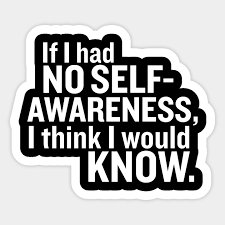

--Nisargadatta
“A great many people think they are thinking when they are merely rearranging their prejudices.”
--David Bohm
"Being is the consummate absence."
--Tony Parsons
There is no self. You do not exist.
Yep. Literally.
Whatttt?
Oh the arguments and disdain, mockery, anger. Damn that Buddha with his nonsensical no-self business. Damn Tony Parsons. And Nisargadatta. And both Krishnamurtis. Damn all those others too, including yours truly.
I mean, what in the actual hell are they talking about? You’re right here, for crying out loud. RIGHT HERE (air-stabs finger in body’s general direction.) Y’know, whose arthritis is this, and what if I step in front of a bus, and etc etc etc.
Are all those teacher-folks just stupid, or bald-faced liars? Or could you be missing something?
Or maybe there’s no outrage, and only despair, as you’ve struggled for years trying hard to comprehend the incomprehensible.
Sitting cross-legged ruminating about I AM, depending on the Self to meditate on its own non-existence.
Either way it’s gibberish. Try as you might, you don’t see it.
Do you need to see it? Of course not. Nothing needs that.
But you want to. And my inbox is once again full of the No-Self question.
Despite 6 previous Mind-Ticklers dealing with this subject head-on, and countless Ticklers indirectly addressing the nonexistent self.
So though we’ve written about this many times before, the subject is still of great interest, and apparently becoming an annual Tickle.
So let’s re-look at what might be standing in the way of seeing that you don’t exist.
Mostly what gets in the way are basic certainties, certainties so completely assumed that it never occurs to you to question them.
Which is why we're about to get literal again.
Also let’s set aside “seems likes” and “feels likes”. You want to find what is actually real, not just what “feels” real. “Seems like” and “feels like” are metaphors. Metaphors aren’t reality; they’re similar-to’s and examples-of.
Yet notice how often you have to resort to them to deal with this baffling question.
OK. Let’s start with reality.
You are absolutely certain there is one.
And ideas like thoughts, ego and mind? Real. That bus you’ll step out in front of? Real. Arthritis? Death? Real and real. Duh and duh.
You’re certain.
And of course when it comes to a me, you’re absolutely certain of that too. There you are, in the mirror. There are the emotions and body aches, there are the thoughts, the socks, the chair, trees, other people.
You can see ‘em. You can feel ‘em.
Notice how much of that certainty about reality depends on “personal experience.”
Meaning, a person. Meaning, you.
What you think, what you feel, what you see and hear.
Things happen to this you. You are the one seeing and feeling.
Notice how much of your you-ness is body based.
Feelings, colors, sounds, senses- come from and point back to the body.
Take the body out of it and where does the self go?
Remove the body as the center of all things, and…
there is no center.
“But there’s still a sense of me.”
Where? Literally, specifically, where?
(Points towards body.) Ah. Are we back to the body- chest, head- to prove your existence?
And what animates this body, what gives life to it, what knows what it feels?
Is that physical?
And then notice all the geography words, the placement words, the location words.
“I’m right here.”
Body gives you a physical place.
We have found you. You are located.
As opposed to decentralized. As opposed to located nowhere.
As opposed to BEING the happenings themselves.
Because what if what you are is experience- every sensation, color, thought, rather than the experiencER?
"I am this feeling. I am this thought. And that one and that one. I am this sound, this color, this sensation."
Literally.
Then there is nothing to point to,
there’s no one to do the pointing, and
you are
everything you’d ever hoped you could be.
Everything.
Literally.
Want to watch Judy's Buddha At The Gas Pump interview? click here
“What you are basically, is simply the fabric and structure of existence itself. And you’re ALL that, only you’re pretending you’re not.”
--Alan Watts
“Listen: this world is the lunatic's sphere,
Don't always agree it's real,
Even with my feet upon it
And the postman knowing my door
My address is somewhere else.”
--Hafiz
